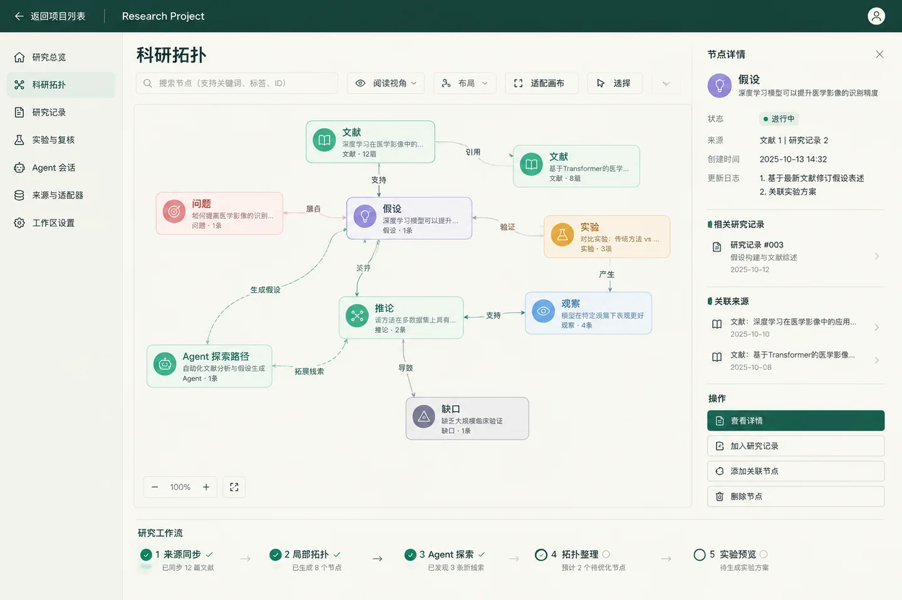
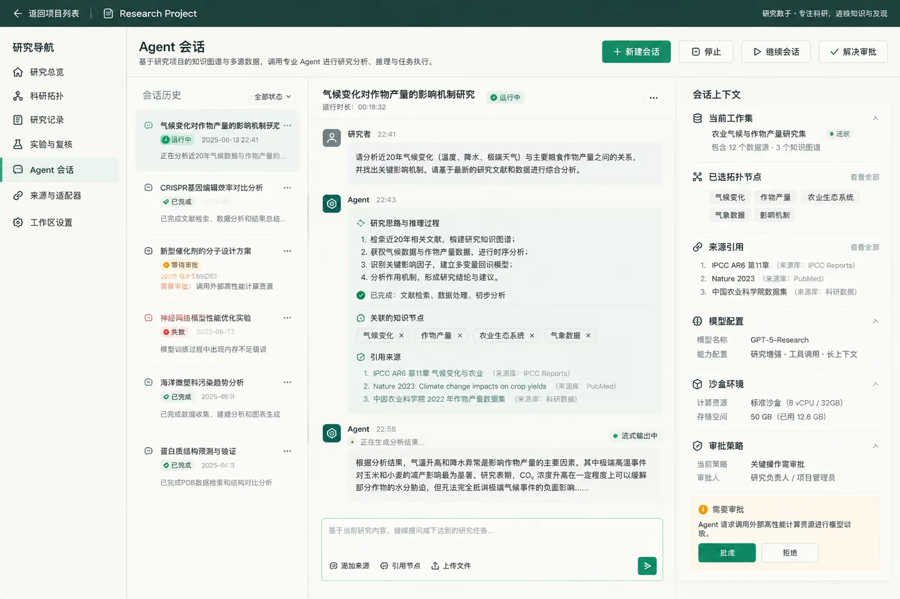
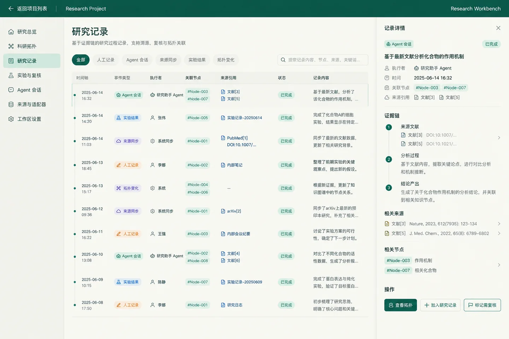

拓扑优先
问题、假说、实验和观察以节点与关系存在，节点组容纳紧密相关的内容。类型核心只提供最小结构，不预置强制栏目。
Topolumia 是本地优先的科研工作台。它连接 Codex、Claude Code 与 OpenCode， 通过 MCP 读写科研上下文，把问题、文献、假说、实验和结论组织成可探索的拓扑； Agent 提出的变更先进入审阅，再由你决定是否写入研究记录。
问题、假说、实验和观察以节点与关系存在，节点组容纳紧密相关的内容。类型核心只提供最小结构，不预置强制栏目。
Agent 获准执行工具，不代表它的科研结论已被接受。候选变更连同来源进入审阅，接受后由同一条正式提交链路写入。
账号、会话与研究数据保存在本机 SQLite。需要算力时检测本机或 SSH 远程的 Python、Conda 与 venv，Agent 据此在自己的工具中探索。
文献节点保存书目信息、方法理解、关键图表与疑问；实验详情展示关联运行的指标、曲线和外部链接。 每个正式对象都能追溯到它的来源，拓扑随之更新，而不是另开一份笔记。

会话运行在 Codex、Claude Code 或 OpenCode 的原生运行时中，Topolumia 通过 MCP 提供研究接口。 长任务持续运行，不做整回合倒计时；需要停止时随时可以打断。
待审阅 · 新建推论
来自 文献[3]、文献[5] 与 实验运行 20250614；关联节点 #Node-003。

研究记录按时间列出人工修改、Agent 提议、来源同步与实验结果，并保存组会、阅读、复盘和周期活动纪要。 逻辑拓扑与时间活动各司其职，回溯时看到的是依据，而不只是结论。

需要 Node.js 22.13+（22 / 24 LTS）、npm 和 Git。打开 http://127.0.0.1:5510
后首次访问创建管理员账号，没有预设密码。Agent CLI 与模型服务需自行准备。
npm ci
npm run build
npm start